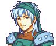

Support Rank C

おOh.

う？Uh?
なあ あんた
名前はなんていうんだい？Hey, you. What's your name?
おれ ゴンザレスMe... Gonzalez.
ゴンザレスか・・・
ばかでかいね あんたGonzalez, huh... You're huge.
おまけにその体つきだ
木なんかひっこ抜いちまうだろうねAnd with that build, you could probably rip a tree right out of the ground.
おれ・・・？Me...?
ふんふん 見事なもんだよ
まさにうってつけだMm-hm, that's really something. Just perfect.
こうなったら なんとしても
逃がすわけにはいかないねえ・・・Well, now I can't let you get away, no matter what...
う・・・
なんだ？Uh... what?
・・・・・・
おれ にげる......Me... run away.
あ ちょっと待ちなってAh, hey, wait a second!
Support Rank B
あAh.
う・・・Uh...
あ 待ちなったら！
あんたに頼みがあるんだHey, wait up, I said! I've got a favor to ask you.
・・・おれ に？...Me?
そうだよ
あんたじゃなきゃできないことさThat's right. It's something only you can do.
実はね・・・西方にね 新しく村を
つくろうって話があるんだSee, actually... there's talk of building a new village out west.
むら・・・Village...
この戦乱で村を焼かれて
住む家を失った人たちがいてねThere are people whose villages got burned in this war, who lost their homes.
あたしたちがいたレジスタンスにも
帰る家のないやつが けっこういるEven in the resistance I was part of, quite a few of us have no home to go back to.
かえる いえ・・・Go back... home...
で みんなで力をあわせて
住むとこを作ろうってわけさSo, we're all going to pool our strength and build a place to live.
そのために人手が欲しいんだよ
とくに あんたみたいな男手がさThat's why I need hands to help — especially strong hands like yours.
で どうだい？
今なら 三食つきだけどねSo, what do you say? Right now there's three meals a day thrown in, you know.
・・・けど...But.
けど おれ
みにくいBut... me ugly.
みんなと いられない
おれ きらわれる・・・Can't be with everyone. Me... get hated...
ははっ ばかだね
そんなことあるもんかHa, you're a fool. That's not going to happen.
あんたの力はね
すごくみんなの役に立つんだYour strength is going to be a huge help to everyone.
あんたがその怪力で
太い木を運んできてごらんJust try carrying a thick log with that monstrous strength of yours.
みんな
大喜びしてくれるさEveryone will be thrilled.
おれが・・・Me...?
みんなに・・・...For everyone...
おれ やるMe do it.
Support Rank A
よHey.
あ・・・Ah...
おれ
あんたのなまえ 知らないMe... don't know your name.
あ そういえばそうだったね
あたしはね・・・Ah, come to think of it, that's true. I'm...
いい・・・
おれ 頭わるいIt's fine... me, head bad.
いっぱい
おぼえられないCan't remember a lot of things.
・・・それに
おれ みにくい...And besides, me ugly.
みんなが おれ見るEveryone... looks at me.
おれ みにくい
頭わるい・・・Me ugly. Head bad...
・・・やれやれ...Sheesh.
ゴンザレス
あんたはもっと自信をもちなGonzalez, you should have more confidence in yourself.
あんたは 顔がおっかない
頭が人より悪い・・・Sure, your face is scary, your head's worse than other people's...
だから それが
どうしたんだい？So what? What of it?
う・・・？Uh...?
いいかい ゴンザレス
あたしは きれい事は好きじゃないListen, Gonzalez, I don't like pretty talk.
みにくくたって 心がきれいなら・・・
なんて言う気はないI'm not going to say something like "even if you're ugly, as long as your heart is beautiful..."
あんたは みにくい
昔から そういじめられたんだろうYou're ugly. You've probably been bullied for it since way back, haven't you.
うう・・・Ugh...
けどね だからって
あきらめることなんかないんだBut that's no reason to give up.
だったら あんたはあんた自身を
じっくり見回して・・・So, you should take a good, careful look at yourself...
ほかの奴らにはない 何かを
見つければいいんだand find something that nobody else has.
あんただけの何かをねSomething that's yours and yours alone.
おれの・・・Mine...?
そうさ あんたのだ
そうすりゃ 誰もバカになんかしないThat's right, yours. Do that, and nobody will ever make a fool of you.
背中をちぢめて生きなくたっていい
堂々としてりゃいいのさYou don't have to live hunched over. You can walk tall.
おれの・・・Mine...?
・・・・・・
おれ 考える・・・......Me... think about it...
頭が いたいHead hurts.
あはは
ま ゆっくり考えればいいさAhaha, well, you can take your time thinking about it.